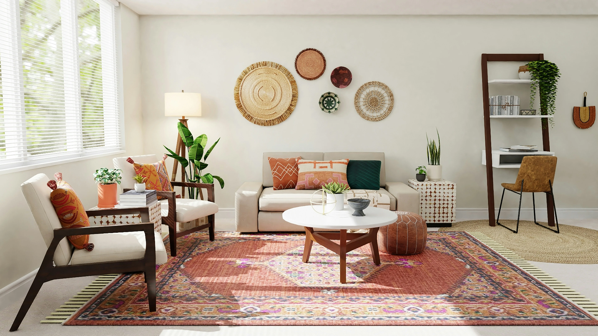

Un piso vacío en Barcelona — segunda residencia, herencia ya repartida, inversión a liquidar — se vende distinto a una vivienda habitual ocupada. NuevaHabitat valoriza, prepara y comercializa con precio fijo de 3.000 € + IVA, sin comisión del 6%.
Valoración gratuitaVender una segunda residencia en Barcelona (o un piso que lleva meses vacío) combina ventajas logísticas —visitas flexibles, posibilidad de home staging, entrega inmediata al comprador— con matices fiscales y de mercado distintos a la venta de tu vivienda habitual. Muchos propietarios subestiman el coste de mantener un piso vacío: IBI, comunidad, seguro, y depreciación por desgaste sin uso.
Cada mes que un piso permanece vacío sin estar a la venta o alquilado tiene un coste real: cuotas de comunidad, IBI, seguro de hogar, suministros mínimos para evitar humedad, y el desgaste silencioso de instalaciones que no se usan. En muchos casos, ese coste acumulado en uno o dos años supera lo que se ahorraría esperando «el momento perfecto» para vender, lo que hace que actuar antes suela ser la decisión más rentable.
En Barcelona ciudad, un piso vacío bien presentado en el Eixample, Gràcia o la Barceloneta compite por compradores de primera o segunda vivienda que buscan entrar a vivir sin reforma integral. En cambio, una segunda residencia en edificio sin ascensor o en planta baja interior requiere pricing agresivo y fotografía que compense carencias. No es lo mismo vender un ático vacío en Sarrià que un piso en el Raval heredado sin actualizar desde hace más de una década: la estrategia de precio y de comprador objetivo cambia completamente.
Propietarios de segunda residencia suelen vivir fuera de Barcelona o en otra comunidad autónoma: necesitan un interlocutor que coordine visitas con llaves en portería, informe con regularidad y cierre la operación sin exigir desplazamientos constantes. Esto incluye también coordinar pequeñas reparaciones o una limpieza a fondo antes de las primeras visitas, algo que muchos propietarios a distancia no pueden supervisar personalmente.
Un piso completamente vacío tiende a parecer más pequeño y menos acogedor en fotografías que uno con mobiliario básico bien dispuesto, un efecto conocido en el sector como «síndrome del piso frío». Invertir en un home staging ligero —muebles de alquiler temporal, iluminación cálida, algún elemento decorativo— suele generar un retorno claramente superior a su coste, ya que mejora tanto el número de visitas generadas por el anuncio como la percepción de valor durante la visita presencial.
Al no depender de una fecha de mudanza propia, muchos propietarios de segunda residencia se plantean si conviene esperar a un momento de mercado más favorable antes de vender. Esta decisión debería basarse en datos concretos —evolución de precios en tu zona en los últimos años, coste mensual real de mantener el piso vacío— y no en la simple intuición de que «Barcelona siempre sube», ya que el coste de oportunidad de esperar sin ningún dato que lo respalde puede superar fácilmente cualquier revalorización especulativa futura.
NuevaHabitat ofrece panel digital de seguimiento, honorarios 3.000 € + IVA solo en escritura y compradores filtrados —ideal si no puedes supervisar cada visita personalmente—. Coordinamos también la documentación fiscal específica de segunda residencia para que llegues a la escritura sin sorpresas de última hora.
A diferencia de la vivienda habitual, la venta de una segunda residencia no suele beneficiarse de las exenciones fiscales por reinversión que aplican en ciertos casos concretos, por lo que la ganancia patrimonial obtenida tributa habitualmente en su totalidad en el IRPF del ejercicio correspondiente. Calcular con antelación, junto a tu asesor fiscal, el impacto real de esta tributación sobre el precio de venta evita sorpresas desagradables al presentar la declaración del año siguiente, y permite negociar el precio final con una expectativa de neto mucho más realista.
Con el paso de los años, mantener una segunda residencia en Barcelona sin uso frecuente deja de tener sentido económico para muchos propietarios: el coste de mantenimiento, los desplazamientos ocasionales y la falta de tiempo para disfrutarla hacen que la venta se convierta en la opción más racional, incluso cuando existe un vínculo sentimental con la vivienda. Reconocer este punto de inflexión a tiempo, en lugar de posponer la decisión indefinidamente, suele traducirse en una venta mejor gestionada y con menos presión de tiempo que si se espera a una necesidad económica urgente. Si heredaste esta segunda residencia, consulta también nuestra guía para vender un piso heredado en Barcelona.
La tributación en IRPF y posibles exenciones difieren si el piso fue vivienda habitual o segunda residencia. El tiempo de tenencia y reinversión pueden afectar. Te orientamos; casos complejos requieren gestor fiscal.
El ayuntamiento de Barcelona calcula plusvalía sobre incremento de valor del suelo. Segunda residencia no cambia el mecanismo, pero el plazo de tenencia sí puede afectar bonificaciones según normativa vigente.
Piso vacío facilita inspección y certificación, pero edificios antiguos pueden requerir ITE. Sin consumo reciente, el certificado energético se basa en características constructivas.
Mantén comunidad al día y contratos de luz/agua mínimos para visitas. Deudas ocultas retrasan escritura y asustan compradores con hipoteca.
Un piso vacío bien preparado se vende sensiblemente mejor que uno descuidado.
Visitamos o usamos datos previos; ideal si no resides en Barcelona permanentemente.
Home staging ligero y reportaje profesional — clave en pisos vacíos que pueden parecer fríos.
Coordinamos acceso con portería o llaves; informes de cada visita en panel digital.
3.000 € + IVA en escritura. Sin % sobre precio de venta.